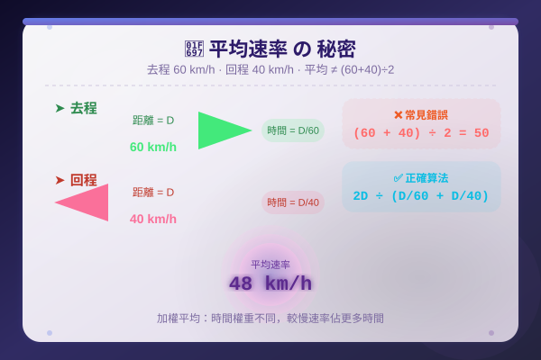

| # | 題目 | 答案 | 類型 |
|---|---|---|---|
| 1 | 計算：(85 + 92 + 78 + 95) ÷ 4 = ？ | 177 | auto |
| 2 | 計算：(120 + 0 + 90 + 60) ÷ 4 = ？ | 120 | auto |
| 3 | 轉換：1 km = _____ m · 1 小時 = _____ 分鐘 = _____ 秒 | 1000 | manual |
| 4 | 一輛車行駛 180 km 用了 2 小時，平均速率 = ？km/h | 180000 | auto |
| 5 | 小明有 5 次測驗分數：80, 85, 90, 0, 95。平均分 = ？ | 0...5 | manual |
| 例1 | 6 個數的平均是 15。這 6 個數的總和 = ？ | 6 | manual |
| 例2 | 4 次測驗分數：72, 0, 88, 92。平均分 = ？ | 0...4 | manual |
| 6 | 5 個數的總和是 225，平均數 = ？ | 0...5 | manual |
| 7 | 4 個數的平均是 18，總和 = ？ | 0...4 | manual |
| 8 | 小明 5 次小測：100, 95, 0, 88, 92。平均分 = ？ | 0...5 | manual |
| 9 | 6 個數：12, 0, 8, 15, 0, 10。平均數 = ？ | 0...6 | manual |
| 例3 | 甲組 10 人平均 85 分，乙組 15 人平均 75 分。全體平均分 = ？ | 80 | manual |
| 例4 | 男同學 12 人平均體重 45 kg，女同學 8 人平均體重 40 kg。全班平均體重 = ？ | 45000 | manual |
| 10 | 240 km ÷ 4 h = ？km/h | 240000 | manual |
| 11 | 把 36 km/h 換算成 m/s。 | 36000 | manual |
| 12 | 把 15 m/s 換算成 km/h。 | 0.015 | manual |
| 13 | 一輛車以速率 90 km/h 行駛，2.5 小時能走多遠？ | 36 | auto |
| 14 | 一段路 300 km，以速率 75 km/h 行駛，需時多久？ | 4 | manual |
| 例7 | 一車先以 80 km/h 走 2 小時，再以 60 km/h 走 3 小時。平均速率 = ？ | 80000 | auto |
| 例8 | 小華跑步 6 km 用了 0.5 小時，再走 4 km 用了 1 小時。全程平均速率 = ？ | 6000 | auto |
| 15 | 3 個數：45, 55, 50。平均數 = ？ | 0...3 | manual |
| 16 | 4 個數的平均是 25，總和 = ？ | 0...4 | manual |
| 17 | 分數：88, 0, 92, 76, 94。平均分 = ？ | ___ | manual |
| 18 | 一車以 60 km/h 行駛 2.5 h，求距離。 | 150 | manual |
| 19 | 把 90 km/h 換算成 m/s。 | 90000 | manual |
| 20 | 甲組 25 人平均 72 分，乙組 15 人平均 84 分。全體平均 = ？ | 78 | manual |
| 21 | 小明 4 科平均 85 分，第 5 科拿 95 分。5 科新平均 = ？ | 90 | manual |
| 22 | 一車去程 80 km/h，回程 60 km/h（同一路程 240 km）。全程平均速率 = ？ | 80000 | manual |
| 23 | 先以 5 m/s 跑 200 秒，再以 4 m/s 跑 300 秒。平均速率 = ？m/s | 0...5 | manual |
| 24 | 某班平均分為 78 分。若總分增加 120 分而人數不變（30人），新平均 = ？ | 99 | manual |
| 25 | 甲班 30 人平均 82 分，乙班 20 人平均 ？分。若兩班合共平均 79 分，求乙班平均分。 | 80.5 | manual |
| 26 | 一車首 100 km 以 50 km/h 行駛，次 150 km 以 75 km/h 行駛。全程平均速率 = ？ | 100000 | manual |
| 27 | 一車從 A 到 B，全程平均速率 48 km/h。去程用 60 km/h 走了 120 km。回程用相同路程，求回程速率。 | 0...48 | manual |
| 28 | 家明 6 次數學測驗分數如下：78, 85, 92, 76, 89, 0（缺席）。求他的平均分。 | 0...6 | manual |
| 29 | 商店四天營業額：$3200, $4500, $2800, $0（休息）。求平均每日營業額。 | 0...3200 | manual |
| 30 | 男工 8 人平均日薪 $650，女工 4 人平均日薪 $500。求全體工人平均日薪。 | 0...8 | manual |
| 31 | 爸爸開車從家到公司距離 72 km。去程用 1.2 小時，回程用 1.5 小時。求 (a) 去程平均速率 (b) 回程平均速率 (c) 全程平均速率。 | 72 | auto |
| 32 | 由家到公園 15 km。哥哥先以 5 km/h 步行了 3 km，再以 12 km/h 跑步餘下路程。求全程平均速率。（取至小數點後一位） | 3 | manual |
| 33 | 5 個數的平均是 20。加入一個新數後，新平均變成 22。求加入的數。 | 0...5 | manual |
| 34 | 哥哥 5 次默書平均 82 分。第 6 次得分後，平均升至 85 分。第 6 次得分 = ？ | 83.5 | manual |
| 35 | 一架飛機飛行 2400 km 用了 3 小時。求其速率：(a) 以 km/h 表示 (b) 以 m/s 表示。 | 800 | auto |
| H1 | 6 個數的平均是 30，總和 = ？ | 0...6 | manual |
| H2 | 分數：85, 70, 0, 95, 80。平均分 = ？ | 1...15 | manual |
| H3 | 甲組 20 人平均 70 分，乙組 10 人平均 85 分。全體平均 = ？ | 77.5 | manual |
| H4 | 把 54 km/h 換算成 m/s。 | 54000 | manual |
| H5 | 一車以 72 km/h 行駛，3.5 小時走多遠？ | ___ | manual |
| H6 | 4 科平均 82 分，第 5 科 90 分。新的 5 科平均 = ？ | 86 | manual |
| H7 | 去程 100 km/h 走 200 km，回程 80 km/h 走相同路程。全程平均速率 = ？ | 100000 | manual |
| H8 | 小明先以 4 m/s 跑 3 分鐘，再以 6 m/s 跑 2 分鐘。平均速率 = ？m/s | 2.5 | auto |
| H9 | 5 個數的平均是 16。拿走一個數（設為 12）後，餘下 4 個數的平均 = ？ | 4.5 | manual |
| H10 | 某車的速率是 25 m/s。若以這速率行駛 5 分鐘，走多遠（以km表示）？ | 5 | auto |
霖楓學苑 · LF Academy · 自動答案生成器 v1.0 · 手動題目請老師覆核